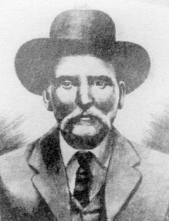

Andrew Jackson Beard

Andrew Jackson Beard foi um inventor afro-americano cujas inovações melhoraram significativamente a segurança ferroviária. Nascido em 1849, ele trabalhou como fazendeiro antes de se tornar inventor. Sua criação mais famosa foi o engate automático de trens, que eliminou a necessidade de acoplamento manual, um processo perigoso que frequentemente resultava em ferimentos graves.
Principais Contribuições
- Desenvolveu um engate automático para vagões de trem, reduzindo os acidentes ferroviários.
- Registrou várias patentes ao longo da vida, incluindo melhorias em equipamentos agrícolas.
- Seu sistema de engate foi adotado amplamente na indústria ferroviária, salvando inúmeras vidas.
- Recebeu reconhecimento por suas invenções e contribuições para a segurança no transporte ferroviário.
Saiba mais
Voltar